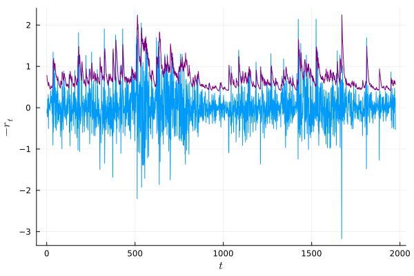

Usage
Preliminaries
We focus on univariate ARCH models for most of this section. Multivariate models work quite similarly; the few differences are discussed in Multivariate models. We will be using the data from Bollerslev and Ghysels (1986), available as the constant BG96. The data consist of daily German mark/British pound exchange rates (1974 observations) and are often used in evaluating implementations of (G)ARCH models (see, e.g., Brooks et.al. (2001). We begin by convincing ourselves that the data exhibit ARCH effects; a quick and dirty way of doing this is to look at the sample autocorrelation function of the squared returns:
julia> using ARCHModels
julia> autocor(BG96.^2, 1:10, demean=true) # re-exported from StatsBase
10-element Array{Float64,1}:
0.22294073831639766
0.17663183540117078
0.14086005904595456
0.1263198344036979
0.18922204038617135
0.09068404029331875
0.08465365332525085
0.09671690899919724
0.09217329577285414
0.11984168975215709Using a critical value of $1.96/\sqrt{1974}=0.044$, we see that there is indeed significant autocorrelation in the squared series.
A more formal test for the presence of volatility clustering is Engle's (1982) ARCH-LM test. The test statistic is given by $LM\equiv TR^2_{aux}$, where $R^2_{aux}$ is the coefficient of determination in a regression of the squared returns on an intercept and $p$ of their own lags. The test statistic follows a $\chi^2_p$ distribution under the null of no volatility clustering.
julia> ARCHLMTest(BG96, 1)
ARCH LM test for conditional heteroskedasticity
-----------------------------------------------
Population details:
parameter of interest: T⋅R² in auxiliary regression of rₜ² on an intercept and its own lags
value under h_0: 0
point estimate: 98.12107516935244
Test summary:
outcome with 95% confidence: reject h_0
p-value: <1e-22
Details:
sample size: 1974
number of lags: 1
LM statistic: 98.12107516935244The null is strongly rejected, again providing evidence for the presence of volatility clustering.
Estimation
Standalone Models
Having established the presence of volatility clustering, we can begin by fitting the workhorse model of volatility modeling, a GARCH(1, 1) with standard normal errors; for other model classes such as EGARCH, see the section on volatility specifications.
julia> fit(GARCH{1, 1}, BG96)
TGARCH{0,1,1} model with Gaussian errors, T=1974.
Mean equation parameters:
───────────────────────────────────────────────
Estimate Std.Error z value Pr(>|z|)
───────────────────────────────────────────────
μ -0.00616637 0.00920163 -0.670139 0.5028
───────────────────────────────────────────────
Volatility parameters:
─────────────────────────────────────────────
Estimate Std.Error z value Pr(>|z|)
─────────────────────────────────────────────
ω 0.0107606 0.00649493 1.65677 0.0976
β₁ 0.805875 0.0725003 11.1155 <1e-27
α₁ 0.153411 0.0536586 2.85903 0.0042
─────────────────────────────────────────────This returns an instance of UnivariateARCHModel, as described in the section Working with UnivariateARCHModels. The parameters $\alpha_1$ and $\beta_1$ in the volatility equation are highly significant, again confirming the presence of volatility clustering. Note also that the fitted values are the same as those found by Bollerslev and Ghysels (1986) and Brooks et.al. (2001) for the same dataset.
The fit method supports a number of keyword arguments; the full signature is
fit(::Type{<:UnivariateVolatilitySpec}, data::Vector; dist=StdNormal, meanspec=Intercept, algorithm=BFGS(), autodiff=:forward, kwargs...)Their meaning is as follows:
dist: the error distribution. A subtype (not instance) ofStandardizedDistribution; see Section Distributions.meanspec=Intercept: the mean specification. Either a subtype ofMeanSpecor an instance thereof (for specifications that require additional data, such asRegression; see the section on mean specification). If the mean specification in question has a notion of sample size (likeRegression), then the sample size should match that of the data, or an error will be thrown. As an example,
julia> X = ones(length(BG96), 1);
julia> reg = Regression(X);
julia> fit(GARCH{1, 1}, BG96; meanspec=reg)
TGARCH{0,1,1} model with Gaussian errors, T=1974.
Mean equation parameters:
────────────────────────────────────────────────
Estimate Std.Error z value Pr(>|z|)
────────────────────────────────────────────────
β₀ -0.00616637 0.00920163 -0.670139 0.5028
────────────────────────────────────────────────
Volatility parameters:
─────────────────────────────────────────────
Estimate Std.Error z value Pr(>|z|)
─────────────────────────────────────────────
ω 0.0107606 0.00649493 1.65677 0.0976
β₁ 0.805875 0.0725003 11.1155 <1e-27
α₁ 0.153411 0.0536586 2.85903 0.0042
─────────────────────────────────────────────Here, both reg and BG86 contain 1974 observations. Notice that because in this case X contains only a column of ones, the estimation results are equivalent to those obtained with fit(GARCH{1, 1}, BG96; meanspec=Intercept) above; the latter is however more memory efficient, as no design matrix needs to be stored.
- The remaining keyword arguments are passed on to the optimizer.
As an example, an EGARCH(1, 1, 1) model without intercept and with Student's $t$ errors is fitted as follows:
julia> fit(EGARCH{1, 1, 1}, BG96; meanspec=NoIntercept, dist=StdT)
EGARCH{1,1,1} model with Student's t errors, T=1974.
Volatility parameters:
──────────────────────────────────────────────
Estimate Std.Error z value Pr(>|z|)
──────────────────────────────────────────────
ω -0.0162014 0.0186806 -0.867286 0.3858
γ₁ -0.0378454 0.018024 -2.09972 0.0358
β₁ 0.977687 0.012558 77.8538 <1e-99
α₁ 0.255804 0.0625497 4.08961 <1e-4
──────────────────────────────────────────────
Distribution parameters:
─────────────────────────────────────────
Estimate Std.Error z value Pr(>|z|)
─────────────────────────────────────────
ν 4.12423 0.40059 10.2954 <1e-24
─────────────────────────────────────────An alternative approach to fitting a UnivariateVolatilitySpec to BG96 is to first construct a UnivariateARCHModel containing the data, and then using fit! to modify it in place:
julia> spec = GARCH{1, 1}([1., 0., 0.]);
julia> am = UnivariateARCHModel(spec, BG96)
TGARCH{0,1,1} model with Gaussian errors, T=1974.
────────────────────────────────────────
ω β₁ α₁
────────────────────────────────────────
Volatility parameters: 1.0 0.0 0.0
────────────────────────────────────────
julia> fit!(am)
TGARCH{0,1,1} model with Gaussian errors, T=1974.
Volatility parameters:
─────────────────────────────────────────────
Estimate Std.Error z value Pr(>|z|)
─────────────────────────────────────────────
ω 0.0108661 0.00657449 1.65277 0.0984
β₁ 0.804431 0.0730395 11.0136 <1e-27
α₁ 0.154597 0.0539319 2.86651 0.0042
─────────────────────────────────────────────Note that fit! will also modify the volatility (and mean and distribution) specifications:
julia> spec
TGARCH{0,1,1} specification.
──────────────────────────────────────────
ω β₁ α₁
──────────────────────────────────────────
Parameters: 0.0108661 0.804431 0.154597
──────────────────────────────────────────Calling fit(am) will return a new instance of UnivariateARCHModel instead:
julia> am2 = fit(am);
julia> am2 === am
false
julia> am2.spec.coefs == am.spec.coefs
trueIntegration with GLM.jl
Assuming the GLM (and possibly DataFrames) packages are installed, it is also possible to pass a LinearModel (or TableRegressionModel) to fit instead of a data vector. This is equivalent to using a Regression as a mean specification. In the following example, we fit a linear model with GARCH{1, 1} errors, where the design matrix consists of a breaking intercept and time trend:
julia> using GLM, DataFrames
julia> data = DataFrame(B=[ones(1000); zeros(974)], T=1:1974, Y=BG96);
julia> model = lm(@formula(Y ~ B*T), data);
julia> fit(GARCH{1, 1}, model)
TGARCH{0,1,1} model with Gaussian errors, T=1974.
Mean equation parameters:
────────────────────────────────────────────────────────
Estimate Std.Error z value Pr(>|z|)
────────────────────────────────────────────────────────
(Intercept) 0.061008 0.0598973 1.01854 0.3084
B -0.104142 0.0660947 -1.57565 0.1151
T -3.79532e-5 3.61469e-5 -1.04997 0.2937
B & T 8.11722e-5 4.95122e-5 1.63944 0.1011
────────────────────────────────────────────────────────
Volatility parameters:
─────────────────────────────────────────────
Estimate Std.Error z value Pr(>|z|)
─────────────────────────────────────────────
ω 0.0103294 0.00591883 1.74518 0.0810
β₁ 0.808781 0.066084 12.2387 <1e-33
α₁ 0.152648 0.0499813 3.0541 0.0023
─────────────────────────────────────────────Model selection
The function selectmodel can be used for automatic model selection, based on an information crititerion. Given a class of model (i.e., a subtype of UnivariateVolatilitySpec), it will return a fitted UnivariateARCHModel, with the lag length parameters (i.e., $p$ and $q$ in the case of GARCH) chosen to minimize the desired criterion. The BIC is used by default.
As an example, the following selects the optimal (minimum AIC) EGARCH(o, p, q) model, where o, p, q < 2, assuming $t$ distributed errors.
julia> selectmodel(EGARCH, BG96; criterion=aic, maxlags=2, dist=StdT)
EGARCH{1,1,2} model with Student's t errors, T=1974.
Mean equation parameters:
─────────────────────────────────────────────
Estimate Std.Error z value Pr(>|z|)
─────────────────────────────────────────────
μ 0.00196126 0.00695292 0.282077 0.7779
─────────────────────────────────────────────
Volatility parameters:
───────────────────────────────────────────────
Estimate Std.Error z value Pr(>|z|)
───────────────────────────────────────────────
ω -0.0031274 0.0112456 -0.278101 0.7809
γ₁ -0.0307681 0.0160754 -1.91398 0.0556
β₁ 0.989056 0.0073654 134.284 <1e-99
α₁ 0.421644 0.0678139 6.21767 <1e-9
α₂ -0.229068 0.0755326 -3.0327 0.0024
───────────────────────────────────────────────
Distribution parameters:
─────────────────────────────────────────
Estimate Std.Error z value Pr(>|z|)
─────────────────────────────────────────
ν 4.18795 0.418697 10.0023 <1e-22
─────────────────────────────────────────Passing the keyword argument show_trace=true will show the criterion for each model after it is estimated.
Any unspecified lag length parameters in the mean specification (e.g., $p$ and $q$ for ARMA) will be optimized over as well:
julia> am = selectmodel(ARCH, BG96; meanspec=AR, maxlags=2)
TGARCH{0,0,2} model with Gaussian errors, T=1974.
Mean equation parameters:
───────────────────────────────────────────────
Estimate Std.Error z value Pr(>|z|)
───────────────────────────────────────────────
c -0.00685701 0.00966961 -0.70913 0.4782
φ₁ 0.0358363 0.0334292 1.072 0.2837
───────────────────────────────────────────────
Volatility parameters:
────────────────────────────────────────────
Estimate Std.Error z value Pr(>|z|)
────────────────────────────────────────────
ω 0.119163 0.00995107 11.9749 <1e-32
α₁ 0.315686 0.0576413 5.47674 <1e-7
α₂ 0.183318 0.0444875 4.12067 <1e-4
────────────────────────────────────────────Here, an ARCH(2)-AR(1) model was selected. Note that this can result in an explosion of the number of models that must be estimated; e.g., selecting the best model from the class of TGARCH{o, p, q}-ARMA{p, q} models results in $5^\mathbf{maxlags}$ models being estimated. It may be preferable to fix the lag length of the mean specification: am = selectmodel(ARCH, BG96; meanspec=AR{1}) considers only ARCH(q)-AR(1) models. Similarly, one may restrict the lag length of the volatility specification and select only among different mean specifications. E.g., the following will select the best ARMA{p, q} specification with constant variance:
julia> am = selectmodel(ARCH{0}, BG96; meanspec=ARMA)
TGARCH{0,0,0} model with Gaussian errors, T=1974.
Mean equation parameters:
─────────────────────────────────────────────
Estimate Std.Error z value Pr(>|z|)
─────────────────────────────────────────────
c -0.0266446 0.0174716 -1.52502 0.1273
φ₁ -0.621838 0.160738 -3.86864 0.0001
θ₁ 0.643588 0.1543 4.17103 <1e-4
─────────────────────────────────────────────
Volatility parameters:
─────────────────────────────────────────
Estimate Std.Error z value Pr(>|z|)
─────────────────────────────────────────
ω 0.220848 0.0118061 18.7063 <1e-77
─────────────────────────────────────────In this case, an ARMA(1, 1) specification was selected.
Value at Risk
One of the primary uses of ARCH models is for estimating and forecasting Value at Risk. Basic in-sample estimates for the Value at Risk implied by an estimated UnivariateARCHModel can be obtained using VaRs:
julia> am = fit(GARCH{1, 1}, BG96);
julia> vars = VaRs(am, 0.05);
julia> using Plots
julia> plot(-BG96, legend=:none, xlabel="\$t\$", ylabel="\$-r_t\$");
julia> plot!(vars, color=:purple);
Forecasting
The predict(am::UnivariateARCHModel) method can be used to construct one-step ahead forecasts for a number of quantities. Its signature is
predict(am::UnivariateARCHModel, what=:volatility; level=0.01)The keyword argument what controls which object is predicted; the choices are :volatility (the default), :variance, :return, and :VaR. The VaR level can be controlled with the keyword argument level.
One way to use predict is in a backtesting exercise. The following code snippet constructs out-of-sample VaR forecasts for the BG96 data by re-estimating the model in a rolling window fashion, and then tests the correctness of the VaR specification with DQTest.
T = length(BG96);
windowsize = 1000;
vars = similar(BG96);
for t = windowsize+1:T-1
m = fit(GARCH{1, 1}, BG96[t-windowsize:t]);
vars[t+1] = predict(m, :VaR; level=0.05);
end
DQTest(BG96[windowsize+1:end], vars[windowsize+1:end], 0.05)
# output
Engle and Manganelli's (2004) DQ test (out of sample)
-----------------------------------------------------
Population details:
parameter of interest: Wald statistic in auxiliary regression
value under h_0: 0
point estimate: 2.5272613188161177
Test summary:
outcome with 95% confidence: fail to reject h_0
p-value: 0.4704
Details:
sample size: 974
number of lags: 1
VaR level: 0.05
DQ statistic: 2.5272613188161177Model diagnostics and specification tests
Testing volatility models in general relies on the estimated conditional volatilities $\hat{\sigma}_t$ and the standardized residuals $\hat{z}_t\equiv (r_t-\hat{\mu}_t)/\hat{\sigma}_t$, accessible via volatilities(::UnivariateARCHModel) and residuals(::UnivariateARCHModel), respectively. The non-standardized residuals $\hat{u}_t\equiv r_t-\hat{\mu}_t$ can be obtained by passing standardized=false as a keyword argument to residuals.
One possibility to test a volatility specification is to apply the ARCH-LM test to the standardized residuals. This is achieved by calling ARCHLMTest on the estimated UnivariateARCHModel:
julia> am = fit(GARCH{1, 1}, BG96);
julia> ARCHLMTest(am, 4) # 4 lags in test regression.
ARCH LM test for conditional heteroskedasticity
-----------------------------------------------
Population details:
parameter of interest: T⋅R² in auxiliary regression of rₜ² on an intercept and its own lags
value under h_0: 0
point estimate: 4.211230445141555
Test summary:
outcome with 95% confidence: fail to reject h_0
p-value: 0.3782
Details:
sample size: 1974
number of lags: 4
LM statistic: 4.211230445141555By default, the number of lags is chosen as the maximum order of the volatility specification (e.g., $\max(p, q)$ for a GARCH(p, q) model). Here, the test does not reject, indicating that a GARCH(1, 1) specification is sufficient for modelling the volatility clustering (a common finding).
Simulation
To simulate from a UnivariateARCHModel, use simulate. You can either specify the UnivariateVolatilitySpec (and optionally the distribution and mean specification) and desired number of observations, or pass an existing UnivariateARCHModel. Use simulate! to modify the data in place. Example:
julia> am3 = simulate(GARCH{1, 1}([1., .9, .05]), 1000; warmup=500, meanspec=Intercept(5.), dist=StdT(3.))
TGARCH{0,1,1} model with Student's t errors, T=1000.
──────────────────────────────
μ
──────────────────────────────
Mean equation parameters: 5.0
──────────────────────────────
─────────────────────────────────────────
ω β₁ α₁
─────────────────────────────────────────
Volatility parameters: 1.0 0.9 0.05
─────────────────────────────────────────
──────────────────────────────
ν
──────────────────────────────
Distribution parameters: 3.0
──────────────────────────────
julia> am4 = simulate(am3, 1000); # passing the number of observations is optional, the default being nobs(am3)Care must be taken if the mean specification has a notion of sample size, as in the case of Regression: because the sample size must match that of the data to be simulated, one must pass warmup=0, or an error will be thrown. For example, am3 above could also have been simulated from as follows:
julia> reg = Regression([5], ones(1000, 1));
julia> am3 = simulate(GARCH{1, 1}([1., .9, .05]), 1000; warmup=0, meanspec=reg, dist=StdT(3.))
TGARCH{0,1,1} model with Student's t errors, T=1000.
──────────────────────────────
β₀
──────────────────────────────
Mean equation parameters: 5.0
──────────────────────────────
─────────────────────────────────────────
ω β₁ α₁
─────────────────────────────────────────
Volatility parameters: 1.0 0.9 0.05
─────────────────────────────────────────
──────────────────────────────
ν
──────────────────────────────
Distribution parameters: 3.0
──────────────────────────────Multivariate models
In this section, we will be using the percentage returns on 29 stocks from the DJIA from 03/19/2008 through 04/11/2019, available as DOW29.
Fitting a multivariate ARCH model proceeds similarly to the univariate case, by passing the type of the multivariate ARCH specification to fit. If the lag length (and in the case of the DCC model, the univariate specification) is left unspecified, then these default to 1 (and GARCH); i.e., the following is equivalent to both fit(DCC{1, 1}, DOW29) and fit(DCC{1, 1, GARCH{1, 1}}, DOW29):
julia> m = fit(DCC, DOW29[:, 1:2])
2-dimensional DCC{1, 1} - TGARCH{0,1,1} - Intercept{Float64} specification, T=2785.
DCC parameters, estimated by largescale procedure:
─────────────────────
β₁ α₁
─────────────────────
0.891288 0.0551542
─────────────────────
Calculating standard errors is expensive. To show them, use
`show(IOContext(stdout, :se=>true), <model>)`The returned object is of type MultivariateARCHModel. Like UnivariateARCHModel, it implements most of the interface of StatisticalModel and hence behaves similarly, so this section documents only the major differences.
The standard errors are not calculated by default. As stated in the output, they can be shown as follows:
julia> show(IOContext(stdout, :se=>true), m)
2-dimensional DCC{1, 1} - TGARCH{0,1,1} - Intercept{Float64} specification, T=2785.
DCC parameters, estimated by largescale procedure:
────────────────────────────────────────────
Estimate Std.Error z value Pr(>|z|)
────────────────────────────────────────────
β₁ 0.891288 0.0434344 20.5203 <1e-92
α₁ 0.0551542 0.0207788 2.65434 0.0079
────────────────────────────────────────────Alternatively, stderror(m) can be used. As in the univariate case, fit supports a number of keyword arguments. The full signature is
fit(spec, data: method=:largescale, dist=MultivariateStdNormal, meanspec=Intercept,
algorithm=BFGS(), autodiff=:forward, kwargs...)Their meaning is similar to the univariate case. In particular, meanspec can be any univariate mean specification, as described in under mean specification. Certain models support different estimation methods; in the case of the DCC model, these are :twostep and :largescale, which respectively refer to the methods of Engle (2002) and Engle, Ledoit, and Wolf (2019). The latter sacrifices some amount of statistical efficiency for much-improved computational speed and is the default.
Again paralleling the univariate case, one may also construct a MultivariateARCHModel by hand, and then call fit or fit! on it, but this is rather cumbersome, as it requires specifying all parameters of the covariance specification.
One-step ahead forecasts of the covariance or correlation matrix are obtained by respectively passing what=:covariance (the default) or what=:correlation to predict:
julia> predict(m, what=:correlation)
2×2 Array{Float64,2}:
1.0 0.436513
0.436513 1.0 In the multivariate case, there are three types of residuals that can be considered: the unstandardized residuals, $a_t$; the devolatized residuals, $\epsilon_t$, where $\epsilon_{it}\equiv a_{it}/\sigma_{it}$; and the decorrelated residuals $z_t\equiv \Sigma^{-1/2}_ta_t$. When called on a MultivariateARCHModel, residuals returns $\{z_t\}$ by default. Passing decorrelated=false returns $\{\epsilon_t\}$, and passing standardized=false returns $\{a_t\}$ (note that decorrelated=true implies standardized=true).